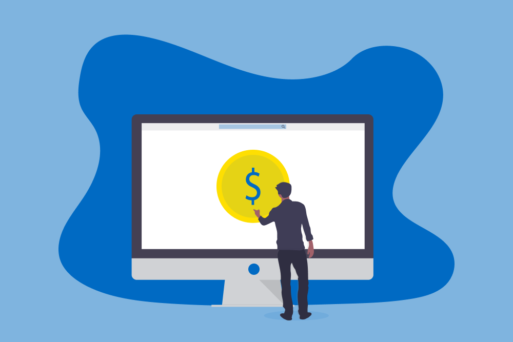

Self-serve banking app

Project Overview
- Organization: RBC
- Role: Design Researcher
- Team: Content designer, visual designer
Background
At RBC, I worked as a Design Research intern on the business banking journey. With the supervision of a senior design researcher, I led and managed evaluative research on a web application for self-serve banking. I was the main researcher on this project and collaborated with a content designer, visual designer as well as consulting with the product owner to ensure alignment on the project goals.
The goal of this research was, “See if users can complete a specific task independently with full confidence and understanding.”
Methods
- Remote user testing with 8 participants
When I joined this project, the product team was ready to evaluate the second iteration of their prototype that was ready to deploy. I facilitated discussion between product and design to align our research goals. From these discussions, I developed a discussion guide and worked with a recruitment agency to find participants who fit our needs. I led moderated interviews on Zoom where users walked through an interactive prototype and provided feedback. Interviews ended with a system usability survey where a score was assigned to the usability of the system based on responses provided.

Source: Userfocus
Key Findings
When analyzing this data, participants had overlapping usability issues that made specific usability issues clear. The SUS surveys provided a standard for comparison that helped us gauge overall experience. Overall, users were able to complete this task with some confidence and understanding. However, there were some key concepts that users had trouble understanding due to confusing wording and imagery. I presented the results to the team and helped to implement my research recommendations in collaboration with the content and visual designers.
Conclusion
During my time at RBC, I was fortunate to be on a team where I wasn’t just an intern - I was a member of the team. I was presented with opportunities to lead a project with a guiding hand when necessary and my work was taken seriously. I was also able to work beyond design research, implementing research recommendations into UI design and content design where necessary.
Thank you for reading!